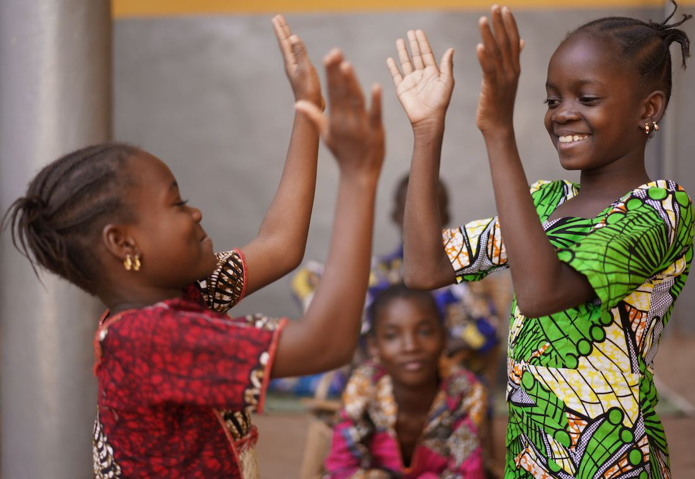
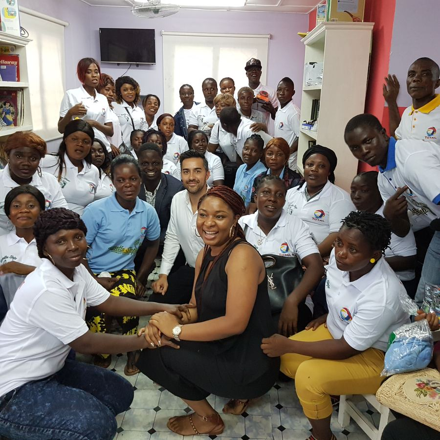

Alpha Kappa Alpha — Eta Beta Omega
Chose Rosetta Steps as the pilot school for its Childhood Hunger Initiative Power Packs programme, feeding 55 children for a full year.
Literacy & community
The school day ends; learning should not. Our afternoon, weekend and adult programmes keep children reading, families growing and the whole community moving forward.
Why it matters
Less than half of Liberians are literate, and many of our children arrive at school without a single book at home. Many adults in our community never had the chance to learn to read at all. Our programmes exist to close that gap — after school, on Saturdays and in the evenings for parents and caregivers.
Each programme is free or heavily subsidised, and each is taught by the same teachers who know our children best. Read to Succeed is open to pupils from other schools, which means our reading room serves the whole neighbourhood, not only our own students.


After school · open to all local pupils
Read to Succeed is our after-school reading programme, offered to pupils from other schools as well as children from the community. It is designed to help young learners build the academic skills they need, and it draws primarily on the Early Grade Reading Assessment (EGRA) to find out exactly where each child is stuck.
Saturdays · 9:00am – 12:00pm
Every Saturday morning we open our doors to children in the community for a free, informal social and academic experience. Most of these children have no exposure to formal education at all — so the morning is deliberately playful, and deliberately full of language.


Adults & caregivers
Rosetta Steps is focused on youth, but we are acutely aware of the need to support adults and adolescents too. Learn to Earn teaches core literacy skills to adults so they can find work and build economic opportunity. The gap is real: many small business proprietors, sellers and unskilled labourers in our community were never taught to read.
The programme teaches basic reading and writing alongside life skills — parenting, food and nutrition, civic responsibility, family planning and computer literacy — so that participants can handle daily activities, economic transactions and their own lives with confidence.
Partners & supporters
Books, food, training, technology and dignity — none of this work happens alone.
Chose Rosetta Steps as the pilot school for its Childhood Hunger Initiative Power Packs programme, feeding 55 children for a full year.
Donated a drone for our Grade 3 reading unit, plus sanitary pads, backpacks and books for our library.
Dr. Mark Sinke ran a teacher training session on campus and donated a printer and training materials.
A student-led initiative that delivered over a hundred sanitary pads and taught menstrual hygiene to our girls.
Our marketing partner, who helps us tell the story of this school to the world.
Scholarships, internet, trips, IXL licences and adult places — all of it funded by people who decided to help. Join them
Read to Succeed is open to children from other schools too. Call the office or come by and ask for the reading room.